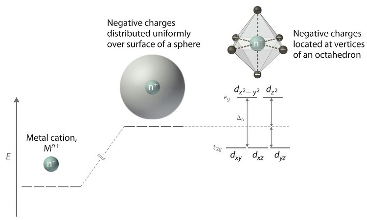

Nucleões: são partículas existentes no núcleo atómico, geralmente protões e neutrões
Nuclídeo: são espécies caracterizadas pelo número de protões e de neutrões. Ex: o C-12 é um nuclídeo
Isótopos: espécies com o mesmo número atómico
Após a descoberta de que os átomos são constituídos por um núcleo e eletrões que o orbitam, Bohr propôs que os eletrões seguiam órbitas circulares em torno do núcleo. No entanto, partículas carregadas eletricamente ao serem acelaradas emitem radiações eletromagnéticas energéticas, pelo que o eletrão iria aproximar-se do núcleo chocando com ele.
Propôs-se então o modelo de orbitais atómicas, em que os eletrões não possuem uma órbita fixa, mas tem uma certa probabilidade de estar em algum local, em que a zona que se defina como orbital atómica é onde esta probabilidade é máxima.
Os números quânticos descrevem os eletrões nos átomos. O número quânticos principal/primário, n, apresenta valores de 1,2,3,4,5,6 ou 7, e define o tamanho/volume da orbital. O número quântico secundário/azimutal, l, apresenta valores de 0 até n-1, e indica a forma da orbital e o seu momento angular. O número quântico terciário/magnético, ml, varia de -l a l, definindo a orientação espacial da orbital diante de um campo magnético externo. O número quântico de spin, ms, pode ser +1/2 ou -1/2.
Sendo assim, as orbitais s,p,d,f,etc são dadas pelo número quântico azimutal e possuem formas especifícas que podem ser observadas neste site.
No estado fundamental, os eletrões devem ocupar as orbitais de menor energia segundo o princípio de Aufbau, em que cada orbital comporta no máximo dois eletrões, segundo o princípio de exclusão de Pauli. Ao preencher as orbitais, na existência de orbitais degeneradas (igual energia), deve-se maximizar o número de eletrões desemparelhados.
A regra de Madelung propõe uma ordem para o preenchimento das orbitais segundo o seguinte diagrama:
Contudo existem exceções, e por isso deve-se ter em conta como varia a energia das orbitais à medida que o número atómico aumenta. Devido à proximidade de energia entre as orbitais 3d e 4s, por vezes ocorrem exceções como no cromo e no cobre em que se torna mais favorável preencher as orbitais 3d do que a 4s. Para além disto, as orbitais 3d são muito compactas, tornando-se em certos casos mais favorável preencher primeiro a orbital 4s. Deve-se ainda ter em conta que ao retirar eletrões retira-se da orbital de maior energia.
Diversas propriedades dos elementos seguem uma tendência geral ao longo da tabela periódica.
A afinidade eletrónica é a energia libertada quando um eletrão se junta a um átomo ou molécula neutro/a, no estado gasoso, formando um anião. A afinidade eletrónica é maior no grupo 17 pois preenche-se a camada de valência. Sendo assim, de modo geral a afinidade eletrónica aumenta ao longo do período (até ao grupo 17, diminui do 17 para o 18), e diminui ao longo do grupo (existem várias exceções à tendência ao longo do grupo). É possível explicar algumas exceções, como a do nitrogénio, através da distribuição eletrónica, como no nitrogénio as três orbitais degeneradas p estão semipreenchidas, não é tão "vantajoso" captar um eletrão pois é necessário emparelhá-los.
A energia de ionização é a energia necessária para remover um eletrão de um átomo neutro ou catião no estado gasoso. A primeira energia de ionização é a energia necessária para remover 1 eletrão de um átomo neutro, enquanto a segunda energia de ionização é referente a um catião no estado +1, e sucessivamente, sendo que a à medida que se retira eletrões torna-se mais dificil retirar outros, ou seja a energia de ionização aumenta. A energia de ionização aumenta ao longo do período, devido ao aumenta da carga nuclear, o que atrai mais os eletrões, sendo mais díficil a sua remoção (exceções, quando se esvazia uma orbital p ou deixar suborbitais p ou d semiprenchidas). Diminui ao longo do grupo, já que ao ocupar um novo nível de valência, os eletrões ficam mais afastados do núcleo, o que faz com que seja mais fácil removê-los, de modo geral.
A eletronegatividade é uma medida da tendência que um átomo tem para atrair um par de eletrões ligantes. Ao longo do período, a eletronegativade aumenta, visto que a carga nuclear aumenta, atraindo mais os eletrões. Ao longo do grupo, a eletronegatividade diminui visto que os átomos ficam cada vez maiores devido aos eletrões ocuparem níveis de energia superiores, o que diminui a atração ao núcleo.
O raio atómico diminui ao longo do período devido ao aumento da carga nuclear, que faz com que os eletrões se aproximem mais do núcleo, diminuindo o átomo. Ao longo do grupo, o raio atómico aumenta visto que os eletrões de valência ocupam níveis de energia cada vez mais energéticos e exteriores, aumentando o raio do átomo.
A tendência para o ponto de fusão e de ebulição segue o seguinte esquema:

A tendência para o caráter metálico está expressa no gráfico inicial.
A reatividade depende da eletropositividade e da eletronegatividade do átomo. Para os metais, a reatividade aumenta ao longo do grupo e diminui ao longo do período, em que o elemento mais eletropositivo é o Frâncio. Para os não metais, diminui ao longo do grupo e aumenta ao longo do período, em que o elemento mais eletronegativo é o Flúor. Estas tendências podem ser explicadas pela tendência da eletronegatividade e da eletropositividade (o contrário da eletronegatividade).
Existem diversos tipos de ligações químicas em que os átomos se ligam para formar moléculas:

Uma ligação dativa representa-se por:

Na realidade, a distinção entre as ligações não é assim tão clara, podendo considerar-se um contínuo de ligações como representado pela seguinte figura:
Pode-se ainda admitir a existência de outros sólidos, como os sólidos moleculares e sólidos covalentes em que nos primeiros existem moléculas individuais unidas por forças de Van der Walls, enquanto nos segundos as ligações entre moléculas são covalentes, pelo que estes são mais resistentes e possuem maior ponto de fusão. Deste modo, é possível construir um tetraedro que representa as ligações (consultar também: Tetrahedra of Structure, Bonding & Material Type e, por curiosidade, uma ferramenta que prevê a natureza das ligações):
A Teoria de Lewis permite prever diferentes tipos de ligações nas moléculas de forma simples, existindo por tanto, diversas exceções.
De modo a desenhar a estrutura de Lewis de uma molécula deve-se começar por contar os eletrões de valência em cada um dos átomos. De seguida, desenham-se os elementos num arranjo simples, sem ligações, em que o elemento mais eletronegativo deve estar no interior, e então começam-se a desenhar as ligações, de modo geral, primeiro-se fazem-se ligações simples, e depois conforme a necessidade de distribuição de eletrões fazem-se mais ligações. O hidrogénio só realiza uma ligação enquanto os outros elementos devem obedecer à regra do octeto (cada elemento deve estar rodeado por 8 eletrões). Existem várias exceções à regra do octeto como o boro e o enxofre, por exemplo.
A carga formal de um átomo numa molécula é a diferença entre o número de eletrões de valência originais e os usados para preencher o octeto. Uma carga formal de 0 é ideal, ±1 é possível na natureza, mas ±2 é impossível/improvável na natureza
As estruturas de ressonância são as diferentes formas que as ligações podem ocorrer numa molécula. As estruturas que minimizam a carga formal são as que realmente ocorrem. É possível fazer a "média"/"soma" das estruturas de resonância para obter o híbrido de ressoância.
As forças intermoleculares correspondem às interações/ligações entre as moléculas.
Podem ser divididas nos seguintes exemplos:
Entre diferentes tipos de moléculas podem também ocorrer outras intereções como dipolo permanente - dipolo induzido; ião - dipolo induzido; etc
A teoria VSEPR, Valence Shell Electron Pair Repulsion ou repulsão eletrónica entre pares de eletrões na camada de valência, permite prever a geometria das moléculas. Neste modelo é importante considerar os pares de eletrões tanto ligantes como não ligantes, estabelecendo-se o número esférico, que é o número de pares eletrónicos a competir por espaço ao redor do átomo central. Considera-se ainda a notação AXmEn, em que A é o átomo central, X o átomo que se liga, E o grupo de eletrões não ligantes de valência, m e n números inteiros. Através desta notação é possível prever a geometria:
A Teoria do Campo Cristalino permite descrever a alteração na energia das orbitais d em complexos de metais de transição na presença de ligantes. Neste modelo, utilizam-se cargas pontuais como uma simplificação para os iões. Num ião de um metal de transição as orbitais d estão degeneradas (igual energia), e há medida que se aproximam os ligantes, em que a carga negativa está distribuída numa forma esférica, todas estas orbitais sobem em energia, mas continuam degeneradas, mas ao considerar-se cargas negativas que se aproximam por direções específicas, algumas orbitais sofrem mais efeito do que outras, resultando na quebra da degenerescência. Isto pode-se observar esquematicamente na imagem seguinte:
Para prever a formo como as orbitais d interagem com os ligantes é importante conhecer a sua forma:
Num composto octaédrico, os ligantes aproximam-se pela direção dos eixos, pelo que as orbitais dx2-y2 e dz2 aumentam em energia, sendo o conjunto chamado de eg, enquanto que dxy, dxz e dyz reduzem em energia, sendo chamados de t2g. Em média a energia das orbitais após a quebra da degeneração é igual à de antes de isto ocorrer, ou seja, quando se tratava de esfera de carga negativa. ΔO é a diferença entre as orbitais de maior energia e as de menor energia, o que significa que eg está 0,6ΔO acima da média e t2g 0,4ΔO abaixo.
Num composto tetraédrico, os ligantes aproxiam-se de forma diferente, pelo que as orbitais mais afetadas também se alteram:

Δt = 0,44ΔO
No preenchimento destas orbitais d, quando as orbitais de energia já estão semipreenchidas, existem dois casos possíveis: se a energia de emparelhamento dos eletrões for menor do que a diferença entre os níveis das orbitais então é mais vantajoso emparelhar os eletrões, o que se chama de "low spin" (menor número de eletrões desemparelhados), ou se pelo contrário a energia de emparelhamento for maior que a diferença entre as energias das orbitais, então é mais vantjoso colocar o eletrão desemparelhado na orbital de maior energia, o que se chama de "high spin". Os ligantes que causam baixa separação das orbitais, e consequentemente contribuem para high spin, são chamado ligantes de campo fraco (weak-field ligands), ou se causam grande separação e, por isso, low spin, chamam-se ligantes de campo forte (strong field ligands)
O desdobramento condiciona a cor do composto, devido às transições que ocorrem entre as orbitais d, e ainda determina se será paramagnético (existem eletrões desemparalhados) ou dimagnético (todos os eletrões emparelhados).
Os testes de chama permitem verificar a presença de um elemento numa amostra de forma rápida. Alguns exemplos são:
| Elemento | Cor da chama |
|---|---|
| Lítio, Li | Vermelho carmesim |
| Sódio, Na | Amarelo |
| Potássio, K | Lilás |
| Rubídio, Rb | Vermelho |
| Césio, Cs | Azul violeta |
| Magnésio, Mg | Branco |
| Cálcio, Ca | Laranja |
| Estrôncio, Sr | Vermelho carmesim |
| Bário, Ba | Verde amarelado |
| Cobre, Cu | Azul (I), Verde (II,não haleto), Verde azulado (II, haleto) |
| Boro, B | Verde |
O termo hidreto é usado geralmente para designar compostos binários que o hidrogénio forma com a maioria dos elementos da tabela periódica. Formalmente, hidreto é o anião do hidrogénio, H-. É possível classificar os hidretos de acordo com os elementos a que o hidrogénio se liga:
Os elementos do grupo 1 reagem com o ar formando óxidos e nitretos. O lítio, Li, reage tanto com o oxigénio como com o nitrogénico formando "óxidos" e nitretos, segundo as reações: 4Li+O2 => 2Li2O e 6Li+N2 => 2Li3N. O sódio reage com o far formando óxido de sódio e peróxido de sódio: 4Na+O2 => 2Na2O e 2Na+O2 => Na2O2. O potássio reage com o oxigénio formando peróxido de potássio e superóxido de potássio: 2K+O2 => K2O2 e 2K+O2 => KO2. O rubídio e césio reagem formando superóxidos de forma análoga ao potássio.
A diferença nos compostos formados deve-se à instabilidade dos iões peróxido e superóxido quando na presença de iões com elevada densidade de carga, que leva à polarização do peróxido e superóxido, que quebra a ligação entre os oxigénios. No Césio e Rubídio os superóxidos formam compostos mais estáveis (reação de formação mais exotérmica), pelo que predominam.
Os óxidos são básicos, reagindo com a água formando um hidróxido metálico, também reagem com ácidos formando um sal e água. Os peróxidos reagem com a água formando um hidróxido metálico e peróxido de hidrogénio, que se decompõe em água e oxigénio caso a temperatura aumenta, também reagem com ácidos formando um sal e peróxido de hidrogénio. Os superóxidos reagem com a água formando um hidróxido metálico, peróxido de hidrogénio e dioxigénio (reagem com ácidos de forma igual, mas em vez de um hidróxido metálico, forma-se um sal).
Os elementos do 2º grupo reagem com o ar formando "óxidos" e nitretos. Todos formam óxidos segunda a reação geral: 2X + O2 => 2XO, em que X representa um metal alcalino-terreso. O estrôncio e o bário também reagem formando peróxidos: Ba + O2 => BaO2 (no lugar do bário também pode estar o estrôncio). A razão para a formação ou não de peróxidos é a mesma do que para os elementos do 1º grupo e reagem com a água de forma semelhante..
Os halogéneos reagem de forma característica com alguns grupos de elementos. Só o fluór e cloro reagem com a água segundo as seguintes reações 2F2 + 2H2O => 4HF + O2, 3F2 + 2H2O => 6HF + O3 e Cl2 + H2O => H+ + Cl- + HClO, os outros elementos não têm potencial de redução suficiente para reagir com a água. Os halogénios reagem diretamente com hidrogénio formando ligações covalentes, que diminuem em força ao longo do grupo, reagindo com água como ácidos fortes (exceto HF). Ao reagir com metais alcalinos, os halogénios formam sais. Os halogéneos reagem também com os metais alcalinos, formando compostos de natureza iónica, exceto o berílio (menos metálico). Os elementos do grupo 13 reagem com os halogéneos formando trialetos, em que o alumínio é capaz de adotar um estrutura dimérica. Com o grupo 14 formam geralmente haletos de forma geral MX4, mas alguns elementos também formam di-haletos. Reagem com alguns elementos do grupo 16 formando compostos como: SF6, SF4, SCl2, OF2, O2F2, entre outros.
A água também reage de forma característica com cada um dos grupos. Os elementos do 1º grupo reagem violentamente com a água, reduzindo-a, enquanto se oxidam, formando catiões metálicos, iões hidróxido e hidrogénio gasoso: 2M(s) + 2H2O(l) => 2M+(aq) +2OH-(aq) +H2(g). Quando os hidretos de metais alcalinos reagem com a água formam catiões metálicos, iões hidróxido água. Os metais alcalino-terrosos reagem de forma semelhante aos metais alcalinos, no entanto, o berílio não reage com a água e o magnésio reage com vapor de água. Os hidretos de metais alcalino-terrosos também reagem de forma semelhante aos metais alcalinos, sendo o berílio a exceção. Os elementos dos grupos 13, 14 e 15 não são muito reativos com a água. Os óxidos de metais reagem com a água como descrito anteriormente, e os óxidos de não metais reagem com água para formar oxoácidos. De modo geral, os halogéneos reagem com água formando haletos e hipohaletos, no entanto, as reações podem variar devido às diferenças na eletronegatividade. Os gases nobres não reagem com a água.
Os oxoácidos são compostos formados por hidrogénio, oxigénio e pelo menos um outro elemento. Podem ser escritos, de forma geral como: X-O-H, em que se X tem elevada eletronegativade, então a ligação X-O mantém-se e há a capacidade de libertar um protão H+, pelo que o composto é ácido. Se X for pouco eletronegativo, então o contrário acontece, e pode-se libertar um ião hidróxido, pelo que o composto é básico. Se a eletronegatividade for intermédia, o composto pode ser anfotérico, ou seja, agir como base ou ácido. Para ver exemplos, consultar: wikipedia.
Ver tabela na wikipedia
A cromatografia em camada delgada é uma técnica cromatográfica que separa componentes numa mistura não volátil. Utiliza-se uma placa feita de um sólido não reativo que é coberto por uma camada de material absorvente, o que é chamado de fase estacionária. Durante o procedimento um solvente (mobile phase ou eluente) irá eluir a placa, movendo-se nesta através de ação capilar. Diferentes compostos movem-se a diferentes velocidades, pelo que se separam.
Processo:
(Por confirmar este paragrafo) A separação que ocorre deve-se às diferenças na atração à fase estacionária e à fase móvel. No TLC de fase normal, a fase estacionária é polar, pelo que os compostos polares interagem mais com a fase estacionária, movimentando-se menos. Quando o eluente é polar, este compete para se ligar à placa, mas também dilui melhor compostos polares, pelo que na globalidade, com um eluente polar, todos os compostos movem-se com maior velocidade. Quando o eluente é apolar o composto apolar dissolve-se melhor e não interage com a placa, pelo que estes componentes movem-se uma distãncia maior. Ainda assim, existe o TLC de fase reversa, em que a fase estacionária é apolar, pelo que os componentes polares passam a mover-se mais.
O factor de retenção, Rf, é quociente da distância percorrida da substância pela distância percorrida pela frente de solvente.